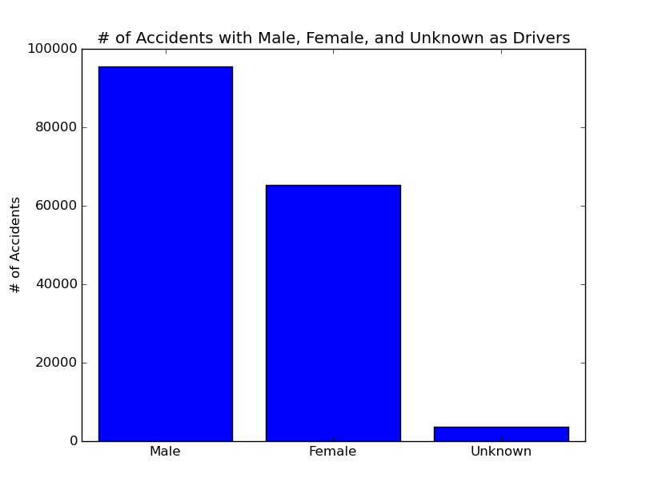
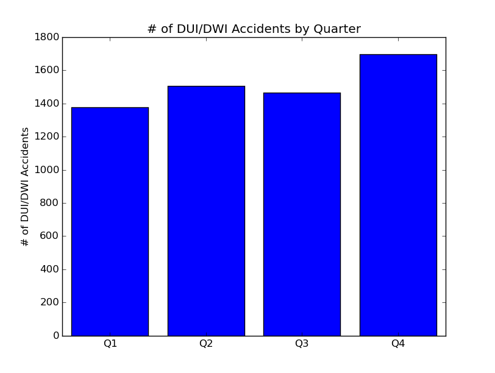
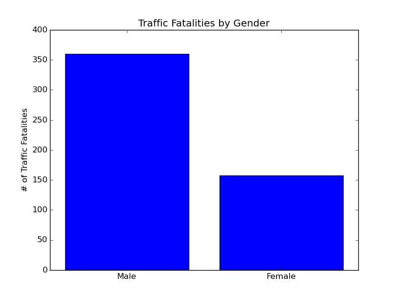
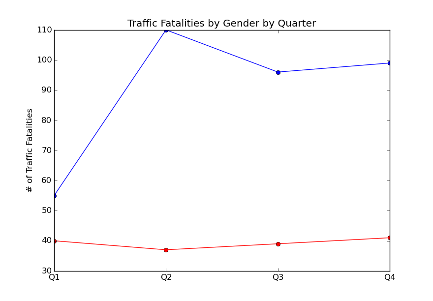
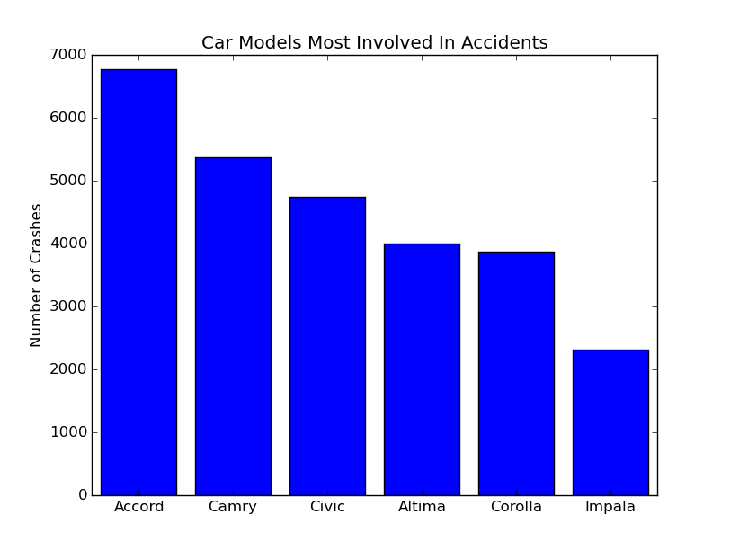
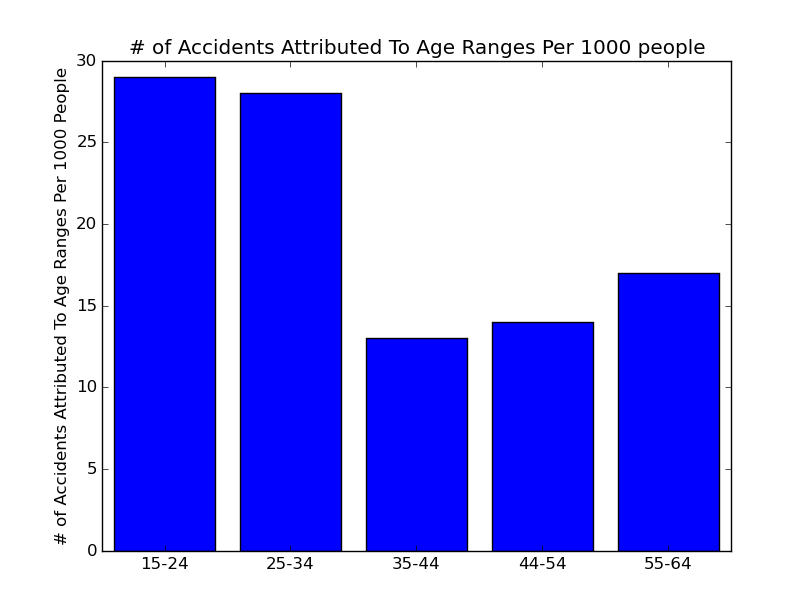
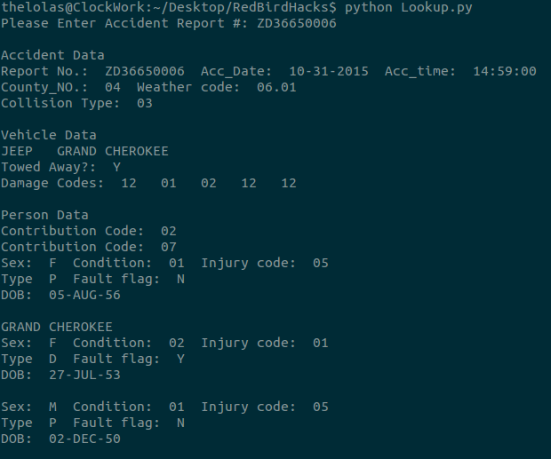
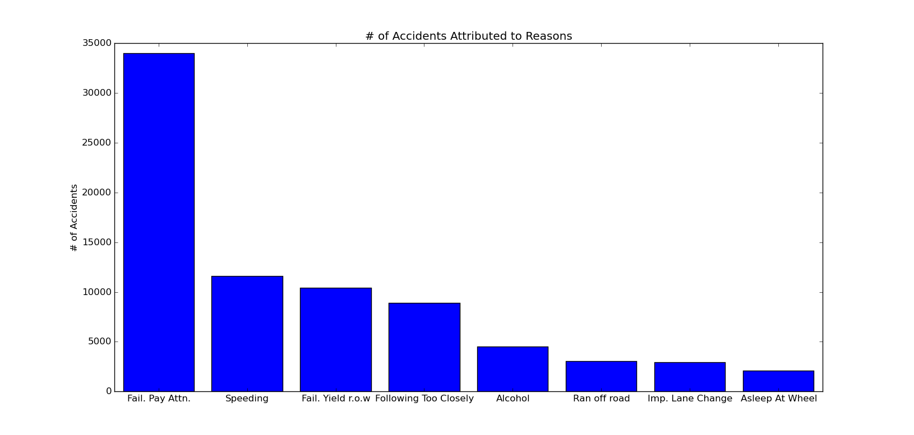

Junior at Illinois State University, studying Computer science.
Github ProfileMy github has a few of my projects including a game, an image analyzer, and this website's source.
I can be contacted at nfriche (at) ilstu (dot) edu
The following are the results of my data analysis project at RedBirdHacks 2016. I will post my results as the event goes on. All code and data can be found here
For a data set to be considered a part of big data, it commonly must have some or all of the 4 v's. These are volume, variety, velocity, and veracity. For my project, I chose the data set of all traffic accidents in the state of Maryland for 2015(available here) This data set includes a ton of information on every traffic accident in the state of Maryland during 2015. The goal is to identify, model, and comment on trends present in the data, such as the number of DUI related traffic accidents, rate of traffic accidents during poor weather, and other factors.
This data set was released by the government of the state of Maryland on February 11th 2016 and satisfies several of the 4 v's of big data. With almost 19,340,987 points of data to consider, this data definitely falls into the high volume category. The data also contains a high amount of variety which satisfies the second v. The third v is veracity which is the trustworthiness of the data, and considering that this data was published by the government, I believe it to be accurate. The final v is velocity and our data does not satisfy this principal because no new data is being analyzed, however 3/4 is certainly sufficient to declare this data set as being a part of big data.
Throughout the event I will be updating this page with my findings.
Below is the first chart made of the event. The number of accidents per quarter. There is a noticeable trend that accidents happen more in quarter 4. Could this be due to bad weather? Lets find out!

It looks like men are almost 1/3 more likely to be in an accident compared to women.
A common piece of advice to give to new drivers is to be wary of driving on holidays because there may be more drunk drivers on the road. I'm going to put this to the test, by identifying the number of DUI's and DWI's per quarter. There is clearly more during Q4, which is during the majority of the year's holidays. Next plan of action, break the data down by month and day and see if there are more accidents caused by DUI/DWI on holidays. Important to note, I am including drug related crashes as well, as they fall under DUI's.
While I did notice that the number of DUI/DWI crashes did increase on holidays, specifically New Years Day and Halloween, however there appeared to be arbitrarily high numbers of crashes on random days. For example there were 44 crashes on december fifth. I considered that there was some sort of event like a party or concert that would cause more people to drive under the influence, however when I checked what counties these crashes occured in, I didn't find a particular area in which there was a heavy or abnormal concentration. However, I did notice the days with the most DUI/DWI crashes occured on the weekends, leading to believe that my search was in the right direction. For now I will suspend looking into DUI/DWI crashes.
Good news. My results indicate that there were 518 traffic collision fatalities in 2015. This is consistent with other groups analysis! This article indicates that there would be an increase in the number of traffic colision fatalities in 2015, meaning that my analysis is correct.
Continuing the chain of findings that are consistent with previously published data, men are the group who perish most in traffic collision fatalities. Roughly 70% of fatalities were male in 2015. In addition there was a large spike in Quarter 2.
 I ran a script to find the car models that are involved in the most accidents. The winners are not that surprising considering that they are some of the most common cars on the market. However, these are the cars that the data indicates are involed in the most crashes.
The old addage that young people get in more car accidents is correct. The age range of 15-24 leads with number of accidents attributed to them per 1000 people, with over 29 per 1000. However, they are followed closely by the 25-34 demographic. My data also indicates that older people start picking up the trend of more accidents again
I created a tool to help me look through the data much quicker than before. I can punch in a report number and this script will comb through the data and tell me all the pertinent information.
Based on my research there are several major causes of accidents. The major one being that people just don't pay attention. The next biggest reason of crashes is due to speeding, following by failing to yield to the right of way and following too closely. Surprisingly, falling asleep at the wheel is a major cause of accidents. In fact its one of the biggest causes.
